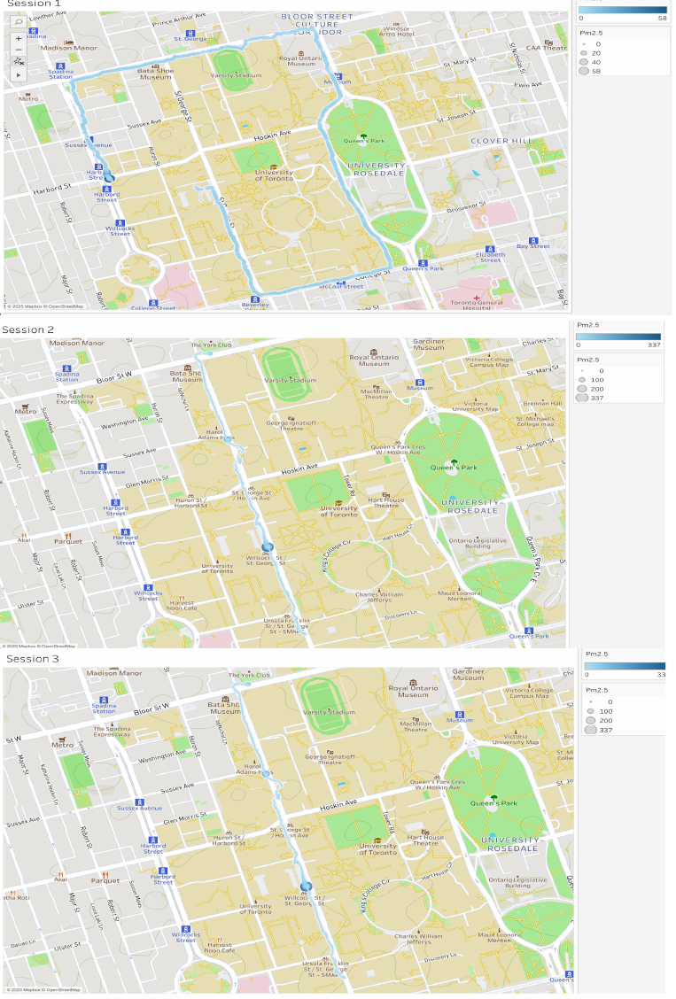
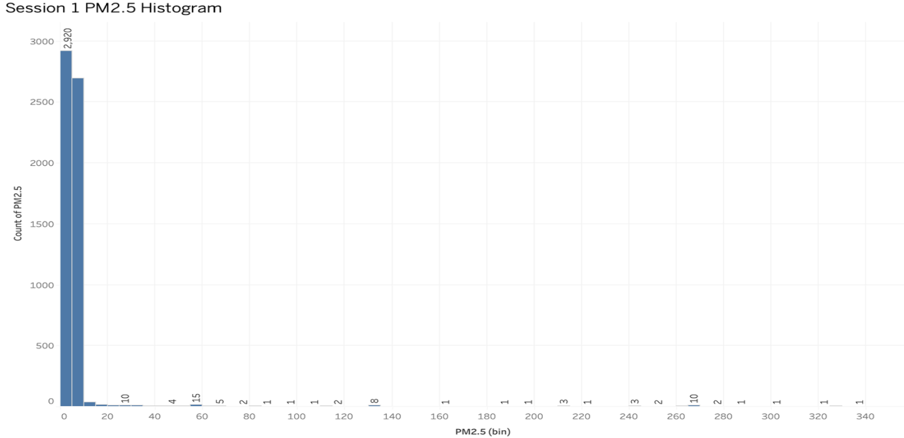
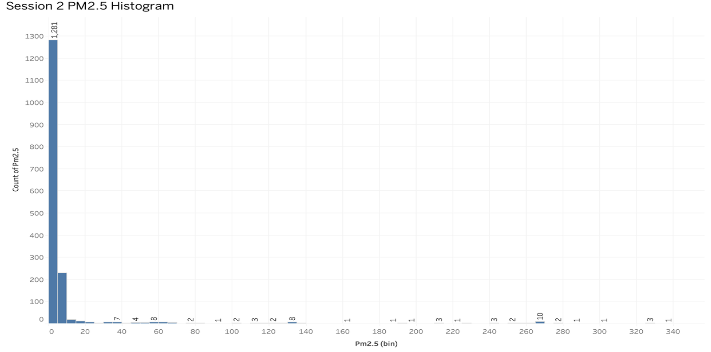
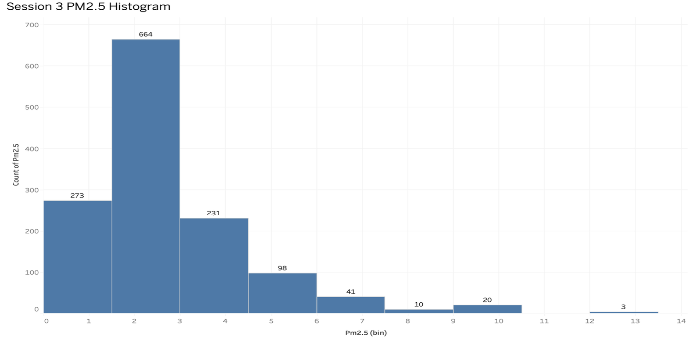
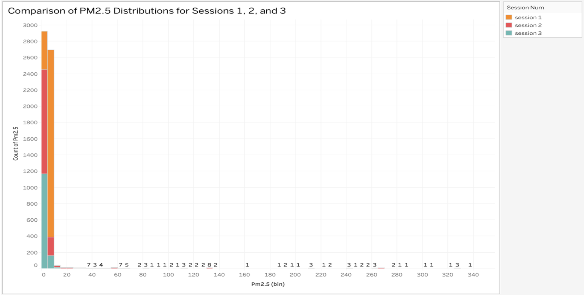
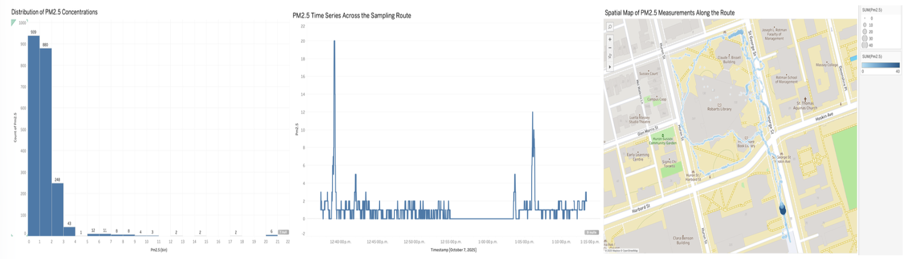

Yeeun Rachel Jo
Contents
Research Experience
01Critical InquiryAI, Humanity & Generative AIDHU436 · AI, Literature & Culture
02Human Action Beyond the InterfaceFrom Online Information to Offline ParticipationENV361 · Social Media and Environmentalism
03Data Analysis & VisualizationFrom Raw Data to Visual InsightENV338 · Environmental Research Data & Decision-Making
04Mixed-Methods ResearchUnderstanding Through Multiple Forms of EvidenceENV421 · Community Research for Social & Environmental Change
DHU436 · Advanced Topics in Digital Humanities
AI, Literature & Culture
Critical inquiry into artificial beings,
human identity, and generative AI.
AI, Literature & Culture
Advanced Topics in Digital Humanities · University of Toronto
A course examining AI and artificial beings through questions of human identity, emotion, and relationships. Through critical analysis of artificial beings in literature and a generative AI writing experiment, the course explored the boundary between human and artificial, and the differences between human and AI-generated outputs.
Featured Critical Project
AI as a Mirror for Humanity
What can artificial beings reveal about how we understand humanity itself?
Compared artificial beings across three works, analyzing how beings that resemble and seek to belong in human society reveal the boundary between the human and the non-human.
Primary Texts
FrankensteinMary Shelley
Klara and the SunKazuo Ishiguro
Do Androids Dream of Electric Sheep?Philip K. Dick
Analytical Framework
01 Limitation
Even if artificial beings can imitate human behavior and emotion, can that alone fully reproduce human experience and identity?
02 Paradox
How does the desire of artificial beings to become human paradoxically reveal the boundary between human and artificial?
03 Human Identity
How do the three works define humanity through elements such as relationships, emotion, experience, and belonging?
Key Argument
The closer artificial beings come to resembling humans,
the more clearly they reveal what humans consider
to be distinctly “human.”
the more clearly they reveal what humans consider
to be distinctly “human.”
Cross-Text Analysis
Frankenstein
Belonging & RejectionThrough the process of a Creature possessing human-like emotions and moral consciousness being excluded from society, this work questions whether ability or emotion alone is sufficient for recognition as human.
Klara and the Sun
Imitation & ReplacementThrough the question of whether Klara, who can learn Josie’s behaviors and traits, can fully replace a person, the work explores whether identity and relationships are more than behavioral replication.
Do Androids Dream of Electric Sheep?
Empathy & Human DifferenceThrough androids nearly indistinguishable from humans, the work analyzes how empathy and emotional connection construct the boundary between human and artificial beings.
Human × Generative AI
One Argument, Two Approaches
After completing my own outline and essay independently, I generated an AI-written version addressing the same argument and compared the two approaches.
The purpose was not simply to determine which version was “better,” but to examine what each approach contributed to the argument and how comparison could inform revision.
My Writing
StrengthsTextual Interpretation · Critical Analysis · Contextual Engagement · Personal Analytical Voice
Limitations
Wordiness · Repetition · Transitions
AI-Generated Version
StrengthsClarity · Concision · Organization · Linear Structure
Limitations
Generic Analysis · Limited Textual Depth · Limited Personal Voice
Process
Write
Independent outline and essay
Generate
AI-generated version of the same argument
Compare
Interpretation · Structure · Clarity · Depth
Evaluate
What strengthens the argument? What should be kept, revised, or rejected?
Revise
Final essay
Comparison → Revision
My Original
Critical Interpretation
Textual Depth
Context
Personal Analysis
Selective AI Contribution
Final RevisionClarity
Concision
Structure
Critical Depth + Clearer Structure
The value of generative AI in this process came not from replacing my original analysis, but from creating a point of comparison through which I could evaluate and revise my own work.
Reflection
What I Learned
The artificial beings in the three texts imitated human behavior and emotion, but resemblance alone did not make them human. Rather, the process revealed the criteria by which we judge humanity: relationships, experience, and emotional connection.
I found a similar question in the generative AI writing comparison. AI could produce human-like, well-structured writing, but a natural-sounding result did not necessarily mean deep interpretation. Determining what was meaningful and appropriate ultimately required comparison and evaluation.
Key Insight
What came to interest me was not how well AI imitates humans, but how humans interpret and judge what AI produces.
Original Work
ENV361 · Social Media and Environmentalism
PANDO
From Online Information
to Offline Action
Academic Context
Imagining the Internet Otherwise
PANDO was developed as a final project for ENV361: Social Media and Environmentalism. The project critically examined the limitations of existing social media platforms and proposed an alternative platform for climate justice.
Drawing on course discussions of digital activism, community-building, misinformation, accessibility, and environmental communication, the project explored how a social platform could move beyond information sharing toward meaningful participation.
The Online–Offline Gap
Information does not automatically lead to action.
Social media can rapidly spread environmental information and connect people to social movements. However, encountering, liking, or sharing information online does not necessarily translate into real-world participation.
PANDO began from this gap between encountering environmental information online and taking meaningful action beyond the platform.
Passive Engagement
Online reactions such as likes, comments, and sharing may remain within the platform without leading to further participation.
Information Overload
Endless streams of information can make it difficult for users to identify relevant issues and concrete opportunities to participate.
Misinformation
Unreliable or misleading information can undermine trust and make meaningful participation more difficult.
Core Question
How could a social platform help turn
environmental information into real-world participation?
environmental information into real-world participation?
Designing a Path to Action
From Information to Participation
Rather than designing another platform centered primarily on content consumption, PANDO was structured around what users could do after encountering environmental information.
Community Initiatives
Flow
Information → Connection → Participation → Offline Action
The interaction should not end at the interface.
Trust Before Action
Credible information matters when it can shape real-world action.
Because PANDO was designed to connect environmental information with opportunities for participation, the credibility of that information was also an important consideration.
01Source Requirement
Users provide supporting sources when sharing factual information.
02Community Flagging
Users can report potentially misleading or problematic content.
03Automated Screening
Potential violations are identified for further review.
04Human Review
Flagged or questionable content is reviewed by human moderators.
Principle
Credible information was treated as a foundation
for meaningful participation.
for meaningful participation.
Beyond the Interface
What I Learned
This project changed how I thought about digital platforms. Rather than focusing only on what users see or consume on a screen, I began to consider what happens after an interaction.
Through PANDO, I began thinking about how digital interactions could create pathways from information toward participation beyond the platform.
01What users see
02What users can do next
03What happens beyond the interface
Key Insight
From designing information
to thinking about human action beyond the interface.
to thinking about human action beyond the interface.
Original Work
ENV338 · Environmental Research Data & Decision-Making
Environmental Data & Visualization
From Raw Data to Visual Insight
Data in Context
Making Environmental Patterns Visible
Environmental data can be difficult to interpret as raw measurements alone.
Using PM2.5 data collected across the University of Toronto campus, I explored how visualization could make differences across locations and sampling conditions easier to identify and compare.
Core Question
How can visualization help reveal meaningful patterns in environmental data?
Three Sampling Conditions
PM2.5 data was collected across three sessions designed around different campus and environmental conditions.
Exploratory Campus Route
Broad sampling across different campus environments.
Lunch-Period Corridor
Focused sampling around the food-truck corridor during lunch.
Rainy, Lower-Activity Condition
The same corridor sampled again under rainy and lower-activity conditions.

Comparing Conditions
Same Measure, Different Patterns



Cross-Session Comparison
Seeing the Difference

Session 1Broad Variation
Session 2Highest Variability
Session 3Lowest & Most Stable
From Visuals to Insight
What Became Visible?
Spatial Variation
Measurements varied across different campus locations.
Short-Term Variation
Visualization made fluctuations easier to identify than from raw measurements alone.
Condition Differences
Comparing sessions revealed differences in distribution and variability across sampling conditions.
Additional Visualization Exploration
Different Views, Different Questions
As an additional visualization exercise, environmental data was explored through multiple visual forms to examine how different representations can reveal different dimensions of a dataset.

Key Idea
Different visualizations reveal different dimensions of the same data.
Reflection
What I Learned
This project taught me to use visualization as part of the analytical process rather than simply as a way to present results.
By comparing the same type of measurement across different sampling conditions, I learned how visual choices can help reveal patterns, variability, and differences that are difficult to recognize from raw measurements alone.
Key Insight
Visualization is not only a way to communicate data. It is a way to think with data.
Original Work
ENV421 · Community Research for Social & Environmental Change
Mixed-Methods Research
Understanding Food Waste Through Multiple Forms of Evidence
Research Context
Understanding Food Waste in Campus Dining
A community-based research project conducted with MealCare to investigate post-consumption food waste across University of Toronto dining halls.
Rather than examining food waste only as a matter of quantity, the research considered both student behavior and the institutional context in which food waste occurred.
Research Question
What behavioral and operational factors contribute to food waste in campus dining environments?
Community Partner
MealCare · University of Toronto
Research Approach
Studying Behavior Through Multiple Methods
Rather than relying on a single source of data, the study combined different research methods to examine food-waste behavior from multiple perspectives.
What do students report?
154 StudentsSelf-reported experiences, behaviors, and perspectives
What is actually discarded?
4 Dining HallsObserved post-consumption food waste in context
What happens operationally?
Operational PerspectivesDining practices, constraints, and interventions
Survey
+
Field Evidence
+
Operational Context
↓
Multiple Perspectives
on the Same Behavior
on the Same Behavior
My Contribution
Survey Research & Field Research
I contributed across the broader research process, with my primary focus on survey research and field data collection.
Primary Focus
Design
Methodology
Data Collection
Analysis
Findings
I took primary responsibility for the survey component, from developing the survey approach and methodology to analyzing student responses and identifying patterns in the findings.
Canada Room Dining Hall
St. Michael's College · University of Toronto
Observe
Record
Measure
I participated in on-site data collection at the Canada Room Dining Hall, contributing to the structured food-waste audit and observing dining and disposal behavior in context.
I also presented the research background and MealCare partnership as part of the final research presentation.
Survey Findings
What Students Told Us
154
Students Surveyed
Finding 01
What Foods Were Most Frequently Discarded?
Carbohydrates were the most frequently reported category of discarded food.
Finding 02
Beyond Portion Size
Portion size alone did not explain food waste.
Poor Taste
Undercooking
Fluctuating Appetite
Eating Behavior & Attention
Student responses also pointed to factors such as poor taste, undercooking, and fluctuating appetite, suggesting that food waste could not be explained by portion size alone.
Finding 03
What Interventions Did Students Prefer?
Students showed stronger preference for preventive strategies that could reduce waste before disposal.
Field Research
From Self-Report to Observed Behavior
Canada Room Dining Hall · St. Michael's College
of observed plates contained edible leftovers
during the audit period
estimated average per plate
Weekend124
Plates Observed
47 Plates with Edible Leftovers
37.9%
Weekday300
Plates Observed
117 Plates with Edible Leftovers
39.0%
Field research provided a way to examine food-waste behavior within an actual dining environment rather than relying only on self-reported responses.
Mixed-Methods Synthesis
Understanding Behavior in Context
Experiences · Reasons · Preferences
Leftovers · Disposal · Dining Behavior
Practices · Protocols · Operational Context
↓
A More Complete Picture
of Food-Waste Behavior
of Food-Waste Behavior
Different methods revealed different dimensions of the same behavioral problem.
Research Translation
From Evidence to Recommendations
Evidence
Interpretation
Recommendation
What the evidence suggested
Food choice
Taste and attention
Dining behavior
Before waste occurs
Flexible Serving Options
Try-Before-You-Commit Taste Tests
Student Awareness Interventions
Changing the environment
Regular Waste Audits & Surveys
Improved Dining Hall Collaboration
Food Redistribution / Community-Fridge Awareness
The research moved beyond documenting food waste toward identifying practical opportunities for MealCare and campus dining stakeholders.
Reflection
Researching Through Multiple Methods
What I Learned
This project gave me experience investigating a research question through multiple forms of evidence.
The study brought together survey research, field observation, structured waste audits, and staff interviews, each providing a different perspective on the research question.
Working with these findings taught me to consider what each method can reveal and how different forms of evidence can be interpreted together.
& Perspectives
& Structured Audit Behavior in Context
Synthesis
Connecting Multiple
Forms of Evidence
Forms of Evidence
Key Insight
Different methods reveal different parts
of human behavior.
of human behavior.
Combining self-reported experiences, observed behavior, and operational perspectives provided a more complete understanding of the research question.
Original Work